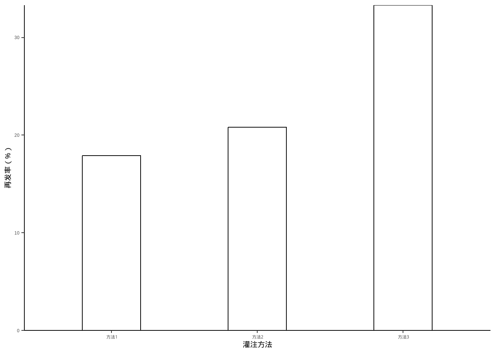
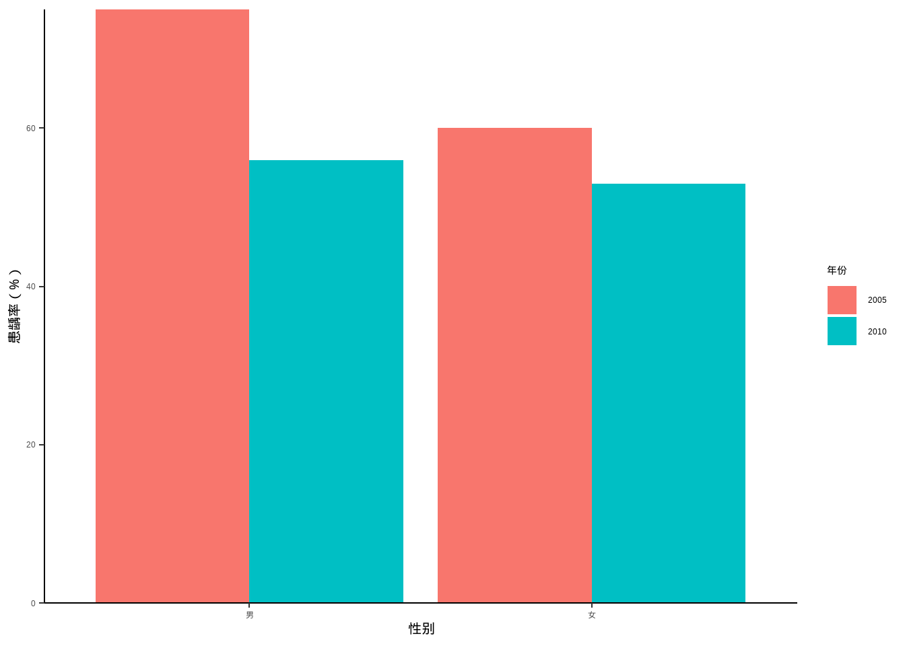
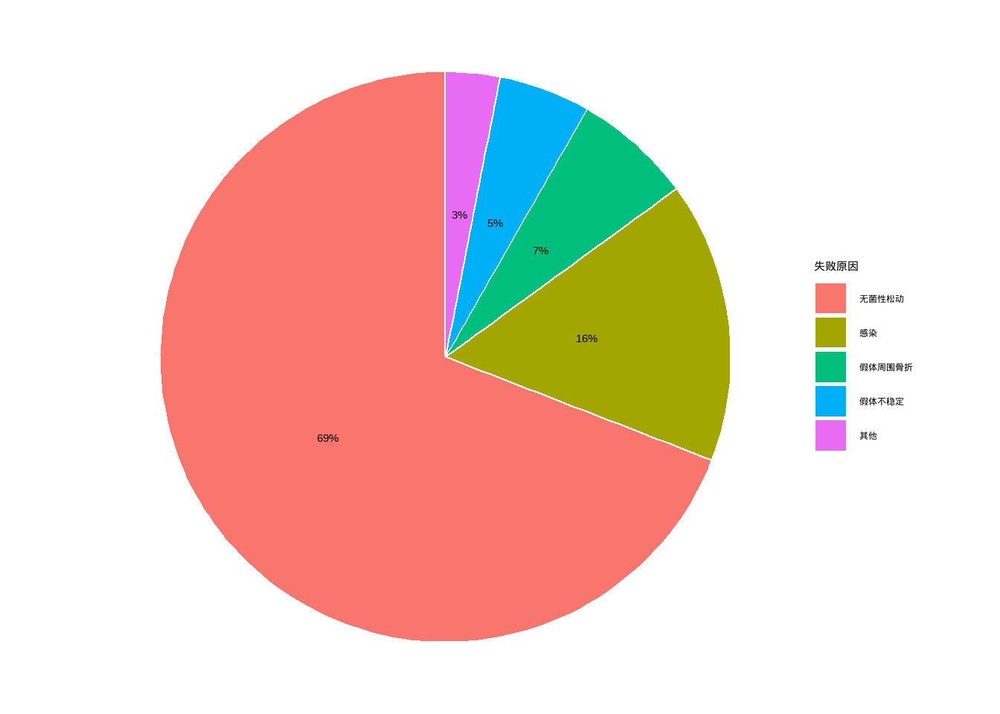
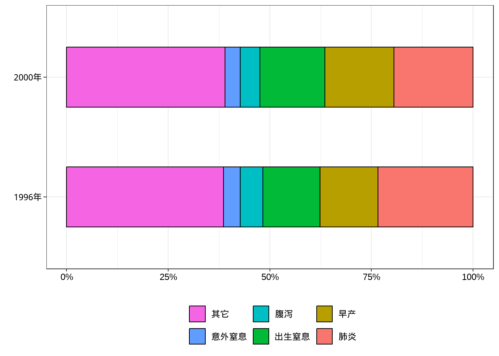
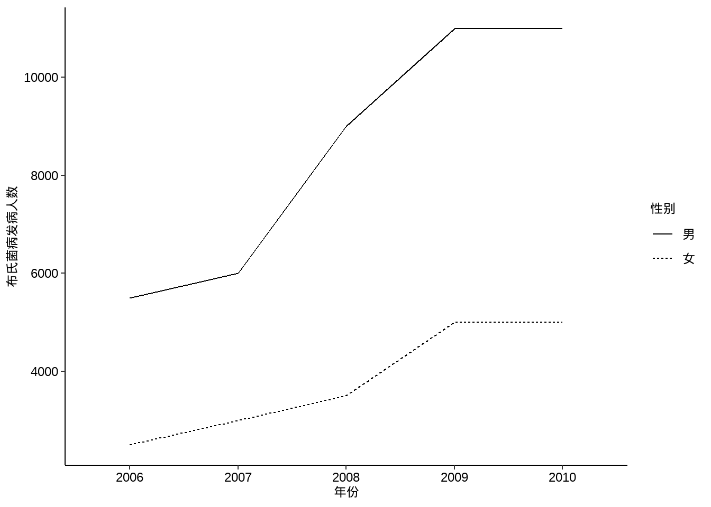
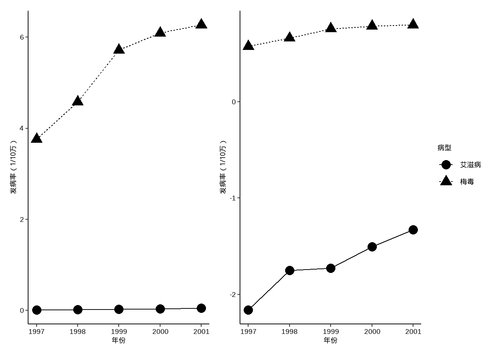
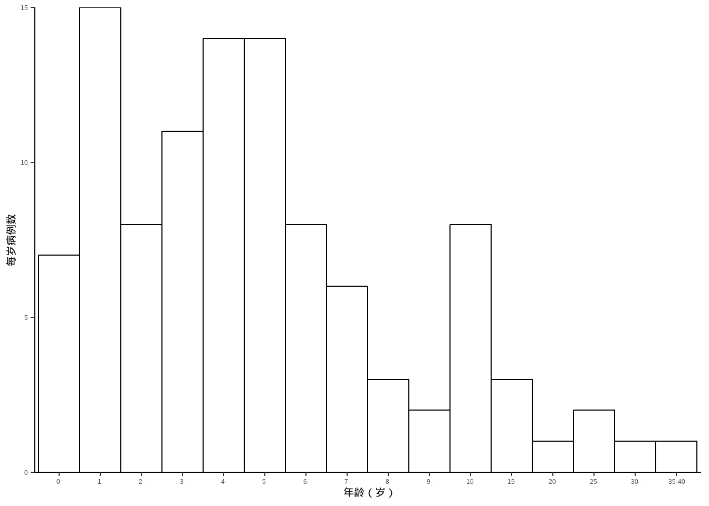
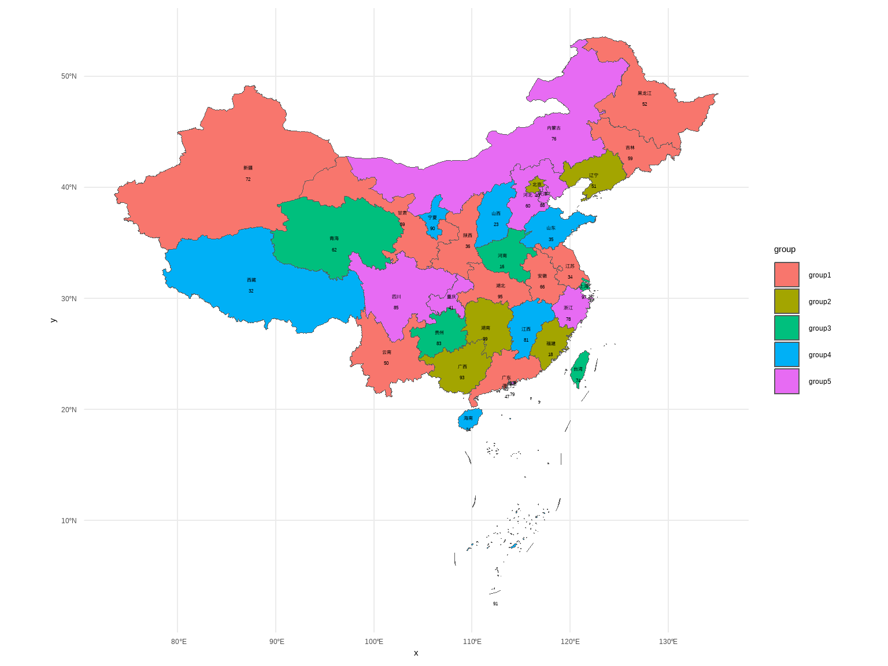
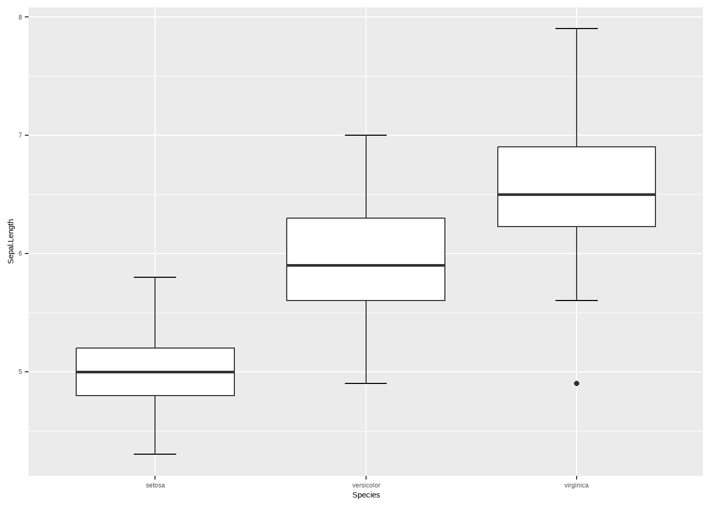
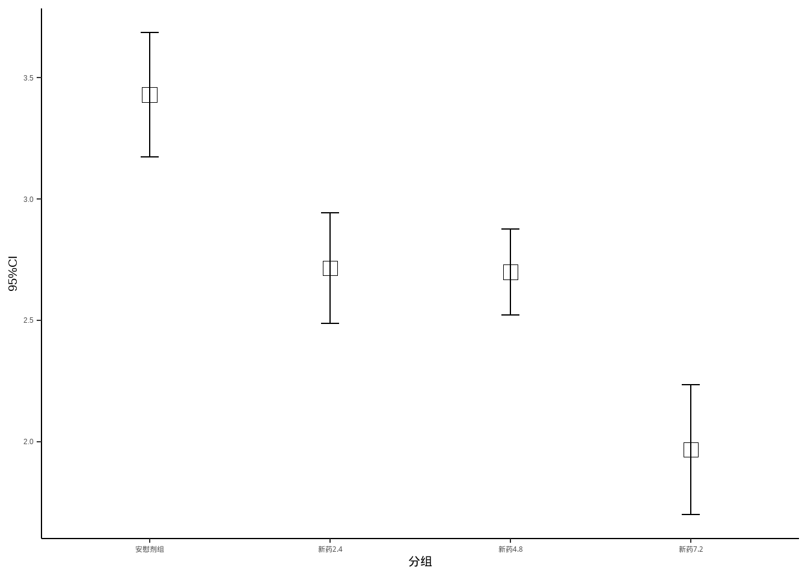

library(compareGroups)
data("regicor")
dim(regicor)
## [1] 2294 25
str(regicor)
## 'data.frame': 2294 obs. of 25 variables:
## $ id : num 2.26e+03 1.88e+03 3.00e+09 3.00e+09 3.00e+09 ...
## ..- attr(*, "label")= Named chr "Individual id"
## .. ..- attr(*, "names")= chr "id"
## $ year : Factor w/ 3 levels "1995","2000",..: 3 3 2 2 2 2 2 1 3 1 ...
## ..- attr(*, "label")= Named chr "Recruitment year"
## .. ..- attr(*, "names")= chr "year"
## $ age : int 70 56 37 69 70 40 66 53 43 70 ...
## ..- attr(*, "label")= Named chr "Age"
## .. ..- attr(*, "names")= chr "age"
## $ sex : Factor w/ 2 levels "Male","Female": 2 2 1 2 2 2 1 2 2 1 ...
## ..- attr(*, "label")= chr "Sex"
## $ smoker : Factor w/ 3 levels "Never smoker",..: 1 1 2 1 NA 2 1 1 3 3 ...
## ..- attr(*, "label")= Named chr "Smoking status"
## .. ..- attr(*, "names")= chr "smoker"
## $ sbp : int 138 139 132 168 NA 108 120 132 95 142 ...
## ..- attr(*, "label")= Named chr "Systolic blood pressure"
## .. ..- attr(*, "names")= chr "sbp"
## $ dbp : int 75 89 82 97 NA 70 72 78 65 78 ...
## ..- attr(*, "label")= Named chr "Diastolic blood pressure"
## .. ..- attr(*, "names")= chr "dbp"
## $ histhtn : Factor w/ 2 levels "Yes","No": 2 2 2 2 2 2 1 2 2 2 ...
## ..- attr(*, "label")= Named chr "History of hypertension"
## .. ..- attr(*, "names")= chr "histbp"
## $ txhtn : Factor w/ 2 levels "No","Yes": 1 1 1 1 1 1 2 1 1 1 ...
## ..- attr(*, "label")= chr "Hypertension treatment"
## $ chol : num 294 220 245 168 NA NA 298 254 194 188 ...
## ..- attr(*, "label")= Named chr "Total cholesterol"
## .. ..- attr(*, "names")= chr "chol"
## $ hdl : num 57 50 59.8 53.2 NA ...
## ..- attr(*, "label")= Named chr "HDL cholesterol"
## .. ..- attr(*, "names")= chr "hdl"
## $ triglyc : num 93 160 89 116 NA 94 71 NA 68 137 ...
## ..- attr(*, "label")= Named chr "Triglycerides"
## .. ..- attr(*, "names")= chr "triglyc"
## $ ldl : num 218.4 138 167.4 91.6 NA ...
## ..- attr(*, "label")= Named chr "LDL cholesterol"
## .. ..- attr(*, "names")= chr "ldl"
## $ histchol: Factor w/ 2 levels "Yes","No": 2 2 2 2 NA 2 1 2 2 2 ...
## ..- attr(*, "label")= chr "History of hyperchol."
## $ txchol : Factor w/ 2 levels "No","Yes": 1 1 1 1 NA 1 1 1 1 1 ...
## ..- attr(*, "label")= Named chr "Cholesterol treatment"
## .. ..- attr(*, "names")= chr "txchol"
## $ height : num 160 163 170 147 NA ...
## ..- attr(*, "label")= Named chr "Height (cm)"
## .. ..- attr(*, "names")= chr "height"
## $ weight : num 64 67 70 68 NA 43.5 79.2 45.8 53 62 ...
## ..- attr(*, "label")= Named chr "Weight (Kg)"
## .. ..- attr(*, "names")= chr "weight"
## $ bmi : num 25 25.2 24.2 31.5 NA ...
## ..- attr(*, "label")= Named chr "Body mass index"
## .. ..- attr(*, "names")= chr "bmi"
## $ phyact : num 304 160 553 522 NA ...
## ..- attr(*, "label")= Named chr "Physical activity (Kcal/week)"
## .. ..- attr(*, "names")= chr "phyact"
## $ pcs : num 54.5 58.2 43.4 54.3 NA ...
## ..- attr(*, "label")= Named chr "Physical component"
## .. ..- attr(*, "names")= chr "pcs"
## $ mcs : num 58.9 48 62.6 57.9 NA ...
## ..- attr(*, "label")= chr "Mental component"
## $ cv : Factor w/ 2 levels "No","Yes": 1 1 1 1 NA 1 1 1 1 1 ...
## ..- attr(*, "label")= chr "Cardiovascular event"
## $ tocv : num 1025 2757 1906 1055 NA ...
## ..- attr(*, "label")= chr "Days to cardiovascular event or end of follow-up"
## $ death : Factor w/ 2 levels "No","Yes": 2 1 1 1 NA 1 2 1 1 1 ...
## ..- attr(*, "label")= chr "Overall death"
## $ todeath : num 1299.2 39.3 858.4 1833.1 NA ...
## ..- attr(*, "label")= chr "Days to overall death or end of follow-up"7 三线表和统计绘图
本章对应课本中的第十章，统计表主要是三线表的绘制，其实这是Word的功能，R语言中的三线表绘制绘制R包通常都是用于绘制各类SCI文献中的第一张表，比如各种基线资料表、人口统计学资料表等。
统计绘图则是介绍各种常用的统计图形，比如：条形图、箱线图、直方图、饼图、茎叶图、地图等。
7.1 统计表
主要是各种三线表的绘制，但是目前的临床研究的三线表制作还是离不开Word、Excel等传统软件，目前没有任何一款R包可以做到：输出结果无需修改即可直接发表。或多或少都需要在Word中修改一下的。
目前在R语言中绘制三线表的常见R包有：compareGroups、tableone、table1、gtSummary、gt、gtExtras等，我已写过多篇推文进行介绍（公众号后台回复三线表即可获取合集）：
compareGroups：compareGroups包1行代码生成基线资料表tableone:使用R语言快速绘制三线表table1:tableone？table1？傻傻分不清楚gtSummary:超棒的三线表绘制工具，总有一款适合你gt:gt包绘制表格详细介绍gtExtras:使用gtExtras美化表格
我使用下来在多数情况下还是compareGroups最方便，所以下面将会详细介绍compareGroups的用法，其他R包的用法请参考以上链接。
7.1.1 compareGroups
compareGroups可用一句代码生成基线资料表、单因素分析表、多因素分析表等，可直接把结果导出为csv、Excel、Word、Markdown、LaTeX、PDF，而且十分美观，大大提高工作效率。
之前也做过介绍，但是最近发现R包更新后自带数据换了，之前的predimed数据没有了，变成了regicor，所以重新再整理一遍。之前的介绍：使用compareGroups包1行代码生成基线资料表
官方文档的名字就叫：分组描述（Descriptives-by-groups），充分说明该包的强项就是分组描述，特别适合基线资料表、各类SCI中的table 1的绘制。支持生存数据，可以计算HR、OR、P-for-trend、多重检验的P值等。
使用方法和之前介绍的基本一样，主要就是3个函数：
compareGroups：计算createTable：构建表格export2xxx导出表格
之前R包内置的predimed已经没有了，现在默认演示数据变成了regicor。
为了说明这个软件包是如何工作的，我们从REGICOR研究中取了一部分数据。REGICOR是一个 对来自西班牙东北部的参与者进行的横断面研究，包括：人口统计学信息（年龄、性别、身高、体重、腰围等）、血脂特征（总胆固醇和胆固醇、甘油三酯等）、问卷调查信息（体格，活动，生活质量，…）等。此外，心血管事件和 死亡信息来自医院和官方登记处。
查看数据:
各个变量的信息如下：
| Name | Label | Codes |
|---|---|---|
| id | Individual id | |
| year | Recruitment year | 1995; 2000; 2005 |
| age | Age | |
| sex | Sex | Male; Female |
| smoker | Smoking status | Never smoker; Current or former < 1y; Former $\geq$ 1y |
| sbp | Systolic blood pressure | |
| dbp | Diastolic blood pressure | |
| histhtn | History of hypertension | Yes; No |
| txhtn | Hypertension treatment | No; Yes |
| chol | Total cholesterol | |
| hdl | HDL cholesterol | |
| triglyc | Triglycerides | |
| ldl | LDL cholesterol | |
| histchol | History of hyperchol. | Yes; No |
| txchol | Cholesterol treatment | No; Yes |
| height | Height (cm) | |
| weight | Weight (Kg) | |
| bmi | Body mass index | |
| phyact | Physical activity (Kcal/week) | |
| pcs | Physical component | |
| mcs | Mental component | |
| cv | Cardiovascular event | No; Yes |
| tocv | Days to cardiovascular event or end of follow-up | |
| death | Overall death | No; Yes |
| todeath | Days to overall death or end of follow-up |
使用该R包的一些注意点：
- 该包的重点是描述数据，不是对数据进行质量控制或其他目的。
- 强烈建议数据框中只包含需要描述的数据，对于不需要的数据建议不要包含在数据框中。
- 分类变量需要进行因子化。
- 可以给各个变量增加
label属性以展示其详细信息，该包默认会展示各个变量的label。
如果是生存数据（time-to-event），必须使用Surv()包装数据。比如：
library(survival)
regicor$tmain <- with(regicor, Surv(tocv, cv == "Yes"))
attr(regicor$tmain, "label") <- "Time to CV event or censoring"这里新建的tmain是生存时间。
以year为分组变量，统计各个变量的差异：
# 不要id这个变量
compareGroups(year ~ . - id, data=regicor)
##
##
## -------- Summary of results by groups of 'Recruitment year'---------
##
##
## var N p.value
## 1 Age 2294 0.078*
## 2 Sex 2294 0.506
## 3 Smoking status 2233 <0.001**
## 4 Systolic blood pressure 2280 <0.001**
## 5 Diastolic blood pressure 2280 <0.001**
## 6 History of hypertension 2286 <0.001**
## 7 Hypertension treatment 2251 0.002**
## 8 Total cholesterol 2193 <0.001**
## 9 HDL cholesterol 2225 0.208
## 10 Triglycerides 2231 0.582
## 11 LDL cholesterol 2126 <0.001**
## 12 History of hyperchol. 2273 <0.001**
## 13 Cholesterol treatment 2239 <0.001**
## 14 Height (cm) 2259 0.003**
## 15 Weight (Kg) 2259 0.150
## 16 Body mass index 2259 <0.001**
## 17 Physical activity (Kcal/week) 2206 <0.001**
## 18 Physical component 2054 0.032**
## 19 Mental component 2054 <0.001**
## 20 Cardiovascular event 2163 0.161
## 21 Days to cardiovascular event or end of follow-up 2163 0.099*
## 22 Overall death 2148 <0.001**
## 23 Days to overall death or end of follow-up 2148 0.252
## 24 Time to CV event or censoring 2163 0.157
## method selection
## 1 continuous normal ALL
## 2 categorical ALL
## 3 categorical ALL
## 4 continuous normal ALL
## 5 continuous normal ALL
## 6 categorical ALL
## 7 categorical ALL
## 8 continuous normal ALL
## 9 continuous normal ALL
## 10 continuous normal ALL
## 11 continuous normal ALL
## 12 categorical ALL
## 13 categorical ALL
## 14 continuous normal ALL
## 15 continuous normal ALL
## 16 continuous normal ALL
## 17 continuous normal ALL
## 18 continuous normal ALL
## 19 continuous normal ALL
## 20 categorical ALL
## 21 continuous normal ALL
## 22 categorical ALL
## 23 continuous normal ALL
## 24 Surv [Tmax=1718] ALL
## -----
## Signif. codes: 0 '**' 0.05 '*' 0.1 ' ' 1比如第一个变量age，其实使用的方差分析，给出了age在不同year中的pvalue，method显示了该包把age这个变量看做连续型变量且符合正态分布。
我们可以自己使用方差分析看下结果：
summary(aov(age ~ year, data = regicor))
## Df Sum Sq Mean Sq F value Pr(>F)
## year 2 623 311.6 2.556 0.0778 .
## Residuals 2291 279320 121.9
## ---
## Signif. codes: 0 '***' 0.001 '**' 0.01 '*' 0.05 '.' 0.1 ' ' 1可以看到结果是一样的哈~
sex这个变量是用的卡方检验：
chisq.test(regicor$sex, regicor$year)
##
## Pearson's Chi-squared test
##
## data: regicor$sex and regicor$year
## X-squared = 1.364, df = 2, p-value = 0.5056结果也是一样的。
支持之使用其中一部分数据，比如只看一下age、smoker、bmi这3个变量在不同的year中的差异，并且只选择性别为女性，对于bmi这个变量，只选择年龄大于50岁的：
compareGroups(year ~ age + smoker + bmi, data=regicor,
selec = list(bmi=age>50),
subset = sex=="Female")
##
##
## -------- Summary of results by groups of 'year'---------
##
##
## var N p.value method
## 1 Age 1193 0.351 continuous normal
## 2 Smoking status 1162 <0.001** categorical
## 3 Body mass index 709 0.308 continuous normal
## selection
## 1 sex == "Female"
## 2 sex == "Female"
## 3 (sex == "Female") & (age > 50)
## -----
## Signif. codes: 0 '**' 0.05 '*' 0.1 ' ' 1连续型变量支持选择不同的统计方法（选择有限），通过method指定即可：
compareGroups(year ~ age + smoker + triglyc, data=regicor,
method = c(triglyc=NA),
alpha= 0.01)
## Warning in cor.test.default(x, as.integer(y), method = "spearman"): Cannot
## compute exact p-value with ties
##
##
## -------- Summary of results by groups of 'Recruitment year'---------
##
##
## var N p.value method selection
## 1 Age 2294 0.078* continuous normal ALL
## 2 Smoking status 2233 <0.001** categorical ALL
## 3 Triglycerides 2231 0.762 continuous non-normal ALL
## -----
## Signif. codes: 0 '**' 0.05 '*' 0.1 ' ' 1method：统计检验方法- 1：数值型变量，正态分布，
- 2：数值型变量，非正态分布
- 3：分类变量
- NA：使用
shapiro.test()决定是否正态分布
alpha：正态性检验的阈值min.dis：所有非因子型向量都会被认为是连续型的，除非某个变量的取值少于5个，可通过此参数更改这个标准。
regicor$age7gr <- as.integer(cut(regicor$age, breaks = c(-Inf, 40, 45, 50, 55, 65, 70, Inf), right = TRUE))
compareGroups(year ~ age7gr, data = regicor, method = c(age7gr = NA), min.dis = 8)
## Warning in compare.i(X[, i], y = y, selec.i = selec[i], method.i = method[i], :
## variable 'age7gr' converted to factor since few different values contained
##
##
## -------- Summary of results by groups of 'Recruitment year'---------
##
##
## var N p.value method selection
## 1 age7gr 2294 0.012** categorical ALL
## -----
## Signif. codes: 0 '**' 0.05 '*' 0.1 ' ' 1max.ylev：分组变量的最大组数
compareGroups(age7gr ~ sex + bmi + smoker, data = regicor, max.ylev = 7)
##
##
## -------- Summary of results by groups of 'age7gr'---------
##
##
## var N p.value method selection
## 1 Sex 2294 0.950 categorical ALL
## 2 Body mass index 2259 <0.001** continuous normal ALL
## 3 Smoking status 2233 <0.001** categorical ALL
## -----
## Signif. codes: 0 '**' 0.05 '*' 0.1 ' ' 1显示列的名字，而不是label：
compareGroups(year ~ age + smoker + bmi, data = regicor, include.label = FALSE)
##
##
## -------- Summary of results by groups of 'year'---------
##
##
## var N p.value method selection
## 1 age 2294 0.078* continuous normal ALL
## 2 smoker 2233 <0.001** categorical ALL
## 3 bmi 2259 <0.001** continuous normal ALL
## -----
## Signif. codes: 0 '**' 0.05 '*' 0.1 ' ' 1Q1/Q3：非正态分布的变量默认显示中位数（25%，75%），这个百分位数可以更改，设置为0和1则是最小值和最大值
resu2 <- compareGroups(year ~ age + triglyc, data = regicor,
method = c(triglyc = 2),
Q1 = 0.025, Q3 = 0.975)
## Warning in cor.test.default(x, as.integer(y), method = "spearman"): Cannot
## compute exact p-value with ties
createTable(resu2)
##
## --------Summary descriptives table by 'Recruitment year'---------
##
## _______________________________________________________________________
## 1995 2000 2005 p.overall
## N=431 N=786 N=1077
## ¯¯¯¯¯¯¯¯¯¯¯¯¯¯¯¯¯¯¯¯¯¯¯¯¯¯¯¯¯¯¯¯¯¯¯¯¯¯¯¯¯¯¯¯¯¯¯¯¯¯¯¯¯¯¯¯¯¯¯¯¯¯¯¯¯¯¯¯¯¯¯
## Age 54.1 (11.7) 54.3 (11.2) 55.3 (10.6) 0.078
## Triglycerides 94.0 [47.0;292] 98.0 [47.0;278] 98.0 [42.0;293] 0.762
## ¯¯¯¯¯¯¯¯¯¯¯¯¯¯¯¯¯¯¯¯¯¯¯¯¯¯¯¯¯¯¯¯¯¯¯¯¯¯¯¯¯¯¯¯¯¯¯¯¯¯¯¯¯¯¯¯¯¯¯¯¯¯¯¯¯¯¯¯¯¯¯simplify：有时某个变量在某个分组中可能样本数为0，这时候要设置为TRUE来排除这样的亚组，因为卡方检验和Fisher精确概率法的计算不能为0。
下面新建一个变量smk，其中unknown这个分组的样本数为0：
regicor$smk <- regicor$smoker
levels(regicor$smk) <- c("Never smoker", "Current or former < 1y", "Former >= 1y", "Unknown")
attr(regicor$smk, "label") <- "Smoking 4 cat."
cbind(table(regicor$smk))
## [,1]
## Never smoker 1201
## Current or former < 1y 593
## Former >= 1y 439
## Unknown 0如果不加simplify = FALSE会给出warning：
compareGroups(year ~ age + smk + bmi, data = regicor)
## Warning in compare.i(X[, i], y = y, selec.i = selec[i], method.i = method[i], :
## Some levels of 'smk' are removed since no observation in that/those levels
##
##
## -------- Summary of results by groups of 'Recruitment year'---------
##
##
## var N p.value method selection
## 1 Age 2294 0.078* continuous normal ALL
## 2 Smoking 4 cat. 2233 <0.001** categorical ALL
## 3 Body mass index 2259 <0.001** continuous normal ALL
## -----
## Signif. codes: 0 '**' 0.05 '*' 0.1 ' ' 1加simplify = FALSE之后就不再对这个变量进行统计检验了，也就没有P值显示了：
compareGroups(year ~ age + smk + bmi, data = regicor, simplify = FALSE)
##
##
## -------- Summary of results by groups of 'Recruitment year'---------
##
##
## var N p.value method selection
## 1 Age 2294 0.078* continuous normal ALL
## 2 Smoking 4 cat. 2233 . categorical ALL
## 3 Body mass index 2259 <0.001** continuous normal ALL
## -----
## Signif. codes: 0 '**' 0.05 '*' 0.1 ' ' 1支持更新对象：
res <- compareGroups(year ~ age + sex + smoker + bmi, data = regicor)
res
##
##
## -------- Summary of results by groups of 'Recruitment year'---------
##
##
## var N p.value method selection
## 1 Age 2294 0.078* continuous normal ALL
## 2 Sex 2294 0.506 categorical ALL
## 3 Smoking status 2233 <0.001** categorical ALL
## 4 Body mass index 2259 <0.001** continuous normal ALL
## -----
## Signif. codes: 0 '**' 0.05 '*' 0.1 ' ' 1res <- update(res, . ~ . - sex + triglyc + cv + tocv,
subset = sex == "Female",
method = c(triglyc = 2, tocv = 2),
selec = list(triglyc = txchol == "No"))
## Warning in cor.test.default(x, as.integer(y), method = "spearman"): Cannot
## compute exact p-value with ties
## Warning in cor.test.default(x, as.integer(y), method = "spearman"): Cannot
## compute exact p-value with ties
res
##
##
## -------- Summary of results by groups of 'year'---------
##
##
## var N p.value
## 1 Age 1193 0.351
## 2 Smoking status 1162 <0.001**
## 3 Body mass index 1169 0.084*
## 4 Triglycerides 1020 0.993
## 5 Cardiovascular event 1121 0.139
## 6 Days to cardiovascular event or end of follow-up 1121 0.427
## method selection
## 1 continuous normal sex == "Female"
## 2 categorical sex == "Female"
## 3 continuous normal sex == "Female"
## 4 continuous non-normal (sex == "Female") & (txchol == "No")
## 5 categorical sex == "Female"
## 6 continuous non-normal sex == "Female"
## -----
## Signif. codes: 0 '**' 0.05 '*' 0.1 ' ' 1支持提取其中的某些信息，比如P值、均值等，方便后续的操作：
data(SNPs)
tab <- createTable(compareGroups(casco ~ snp10001 + snp10002 + snp10005 +
snp10008 + snp10009, SNPs))
## Warning in chisq.test(xx, correct = FALSE): Chi-squared approximation may be
## incorrect
## Warning in chisq.test(xx, correct = FALSE): Chi-squared approximation may be
## incorrect
## Warning in chisq.test(xx, correct = FALSE): Chi-squared approximation may be
## incorrect
# 提取P值，方便进行校正
pvals <- getResults(tab, "p.overall")
p.adjust(pvals, method = "BH")
## snp10001 snp10002 snp10005 snp10008 snp10009
## 0.7051300 0.7072158 0.7583432 0.7583432 0.70721584.6.0以后的版本还增加了计算调整P值的方法，和p.adjust的方法一样，比如Bonferroni/False Discovery Rate等。
cg <- compareGroups(casco ~ snp10001 + snp10002 + snp10005 + snp10008 + snp10009, SNPs)
## Warning in chisq.test(xx, correct = FALSE): Chi-squared approximation may be
## incorrect
## Warning in chisq.test(xx, correct = FALSE): Chi-squared approximation may be
## incorrect
## Warning in chisq.test(xx, correct = FALSE): Chi-squared approximation may be
## incorrect
createTable(padjustCompareGroups(cg, method = "BH"))
##
## --------Summary descriptives table by 'casco'---------
##
## _________________________________________
## 0 1 p.overall
## N=47 N=110
## ¯¯¯¯¯¯¯¯¯¯¯¯¯¯¯¯¯¯¯¯¯¯¯¯¯¯¯¯¯¯¯¯¯¯¯¯¯¯¯¯¯
## snp10001: 0.705
## CC 2 (4.26%) 10 (9.09%)
## CT 21 (44.7%) 32 (29.1%)
## TT 24 (51.1%) 68 (61.8%)
## snp10002: 0.707
## AA 0 (0.00%) 5 (4.55%)
## AC 25 (53.2%) 53 (48.2%)
## CC 22 (46.8%) 52 (47.3%)
## snp10005: 0.758
## AA 0 (0.00%) 3 (2.73%)
## AG 22 (46.8%) 48 (43.6%)
## GG 25 (53.2%) 59 (53.6%)
## snp10008: 0.758
## CC 30 (63.8%) 74 (67.3%)
## CG 15 (31.9%) 29 (26.4%)
## GG 2 (4.26%) 7 (6.36%)
## snp10009: 0.707
## AA 21 (45.7%) 51 (46.4%)
## AG 25 (54.3%) 54 (49.1%)
## GG 0 (0.00%) 5 (4.55%)
## ¯¯¯¯¯¯¯¯¯¯¯¯¯¯¯¯¯¯¯¯¯¯¯¯¯¯¯¯¯¯¯¯¯¯¯¯¯¯¯¯¯支持计算OR值和HR值，如果是二分类会计算OR值，如果是time-to-event数据会计算HR值：
# show.ratio = TRUE展示p.ratio和OR值
res1 <- compareGroups(cv ~ age + sex + bmi + smoker, data = regicor, ref = 1)
createTable(res1, show.ratio = TRUE)
##
## --------Summary descriptives table by 'Cardiovascular event'---------
##
## ______________________________________________________________________________________
## No Yes OR p.ratio p.overall
## N=2071 N=92
## ¯¯¯¯¯¯¯¯¯¯¯¯¯¯¯¯¯¯¯¯¯¯¯¯¯¯¯¯¯¯¯¯¯¯¯¯¯¯¯¯¯¯¯¯¯¯¯¯¯¯¯¯¯¯¯¯¯¯¯¯¯¯¯¯¯¯¯¯¯¯¯¯¯¯¯¯¯¯¯¯¯¯¯¯¯¯
## Age 54.6 (11.1) 57.5 (11.0) 1.02 [1.00;1.04] 0.017 0.018
## Sex: 0.801
## Male 996 (48.1%) 46 (50.0%) Ref. Ref.
## Female 1075 (51.9%) 46 (50.0%) 0.93 [0.61;1.41] 0.721
## Body mass index 27.6 (4.56) 28.1 (4.48) 1.02 [0.98;1.07] 0.313 0.307
## Smoking status: <0.001
## Never smoker 1099 (54.3%) 37 (40.2%) Ref. Ref.
## Current or former < 1y 506 (25.0%) 47 (51.1%) 2.75 [1.77;4.32] <0.001
## Former >= 1y 419 (20.7%) 8 (8.70%) 0.58 [0.25;1.19] 0.142
## ¯¯¯¯¯¯¯¯¯¯¯¯¯¯¯¯¯¯¯¯¯¯¯¯¯¯¯¯¯¯¯¯¯¯¯¯¯¯¯¯¯¯¯¯¯¯¯¯¯¯¯¯¯¯¯¯¯¯¯¯¯¯¯¯¯¯¯¯¯¯¯¯¯¯¯¯¯¯¯¯¯¯¯¯¯¯ref可以更改参考水平，比如smoker以第一个水平为参考，sex以第二个水平为参考：
res2 <- compareGroups(cv ~ age + sex + bmi + smoker, data = regicor,
ref = c(smoker = 1, sex = 2))
createTable(res2, show.ratio = TRUE)
##
## --------Summary descriptives table by 'Cardiovascular event'---------
##
## ______________________________________________________________________________________
## No Yes OR p.ratio p.overall
## N=2071 N=92
## ¯¯¯¯¯¯¯¯¯¯¯¯¯¯¯¯¯¯¯¯¯¯¯¯¯¯¯¯¯¯¯¯¯¯¯¯¯¯¯¯¯¯¯¯¯¯¯¯¯¯¯¯¯¯¯¯¯¯¯¯¯¯¯¯¯¯¯¯¯¯¯¯¯¯¯¯¯¯¯¯¯¯¯¯¯¯
## Age 54.6 (11.1) 57.5 (11.0) 1.02 [1.00;1.04] 0.017 0.018
## Sex: 0.801
## Male 996 (48.1%) 46 (50.0%) 1.08 [0.71;1.64] 0.721
## Female 1075 (51.9%) 46 (50.0%) Ref. Ref.
## Body mass index 27.6 (4.56) 28.1 (4.48) 1.02 [0.98;1.07] 0.313 0.307
## Smoking status: <0.001
## Never smoker 1099 (54.3%) 37 (40.2%) Ref. Ref.
## Current or former < 1y 506 (25.0%) 47 (51.1%) 2.75 [1.77;4.32] <0.001
## Former >= 1y 419 (20.7%) 8 (8.70%) 0.58 [0.25;1.19] 0.142
## ¯¯¯¯¯¯¯¯¯¯¯¯¯¯¯¯¯¯¯¯¯¯¯¯¯¯¯¯¯¯¯¯¯¯¯¯¯¯¯¯¯¯¯¯¯¯¯¯¯¯¯¯¯¯¯¯¯¯¯¯¯¯¯¯¯¯¯¯¯¯¯¯¯¯¯¯¯¯¯¯¯¯¯¯¯¯这里的p.overall是通过t检验计算的：(如果不符合正态分布是通过Kruskall-Wallis检验计算)
t.test(age ~ cv, data = regicor)
##
## Welch Two Sample t-test
##
## data: age by cv
## t = -2.4124, df = 99.303, p-value = 0.01768
## alternative hypothesis: true difference in means between group No and group Yes is not equal to 0
## 95 percent confidence interval:
## -5.1660205 -0.5031794
## sample estimates:
## mean in group No mean in group Yes
## 54.62192 57.45652这个表格中的p.ratio和OR值就是做个逻辑回归得到的：
aa <- glm(cv ~ age, data = regicor,family = binomial())
broom::tidy(aa,exponentiate = T,conf.int = T)
## # A tibble: 2 × 7
## term estimate std.error statistic p.value conf.low conf.high
## <chr> <dbl> <dbl> <dbl> <dbl> <dbl> <dbl>
## 1 (Intercept) 0.0120 0.572 -7.74 1.01e-14 0.00377 0.0357
## 2 age 1.02 0.00980 2.39 1.69e- 2 1.00 1.04age的p.value就是表格中的p.ratio，estimate是OR值，conf.low和conf.high是可信区间。
ref.no表示，如果某个变量中有No（或者NO，no，不区分大小写）这个类别，那就以这个类别为参考，这是一个可适用于所有变量的参数。
res <- compareGroups(cv ~ age + sex + bmi + histhtn + txhtn, data = regicor,
ref.no = "NO")
createTable(res, show.ratio = TRUE)
##
## --------Summary descriptives table by 'Cardiovascular event'---------
##
## ____________________________________________________________________________________
## No Yes OR p.ratio p.overall
## N=2071 N=92
## ¯¯¯¯¯¯¯¯¯¯¯¯¯¯¯¯¯¯¯¯¯¯¯¯¯¯¯¯¯¯¯¯¯¯¯¯¯¯¯¯¯¯¯¯¯¯¯¯¯¯¯¯¯¯¯¯¯¯¯¯¯¯¯¯¯¯¯¯¯¯¯¯¯¯¯¯¯¯¯¯¯¯¯¯
## Age 54.6 (11.1) 57.5 (11.0) 1.02 [1.00;1.04] 0.017 0.018
## Sex: 0.801
## Male 996 (48.1%) 46 (50.0%) Ref. Ref.
## Female 1075 (51.9%) 46 (50.0%) 0.93 [0.61;1.41] 0.721
## Body mass index 27.6 (4.56) 28.1 (4.48) 1.02 [0.98;1.07] 0.313 0.307
## History of hypertension: 0.058
## Yes 647 (31.3%) 38 (41.3%) 1.54 [1.00;2.36] 0.049
## No 1418 (68.7%) 54 (58.7%) Ref. Ref.
## Hypertension treatment: 0.270
## No 1657 (81.3%) 70 (76.1%) Ref. Ref.
## Yes 382 (18.7%) 22 (23.9%) 1.37 [0.82;2.21] 0.223
## ¯¯¯¯¯¯¯¯¯¯¯¯¯¯¯¯¯¯¯¯¯¯¯¯¯¯¯¯¯¯¯¯¯¯¯¯¯¯¯¯¯¯¯¯¯¯¯¯¯¯¯¯¯¯¯¯¯¯¯¯¯¯¯¯¯¯¯¯¯¯¯¯¯¯¯¯¯¯¯¯¯¯¯¯sex/histhtn/txhtn这几个变量中都有No这个分类，所以都以这个类别为参考。
对于连续性变量来说，OR值和HR值的解释是自变量每增加一个单位，因变量变化OR倍或HR倍，参数fact.ratio可以控制一个单位具体是多少。比如设置bmi的一个单位是2，age的一个单位是10：
res <- compareGroups(cv ~ age + bmi, data = regicor,
fact.ratio = c(age = 10, bmi = 2))
createTable(res, show.ratio = TRUE)
##
## --------Summary descriptives table by 'Cardiovascular event'---------
##
## __________________________________________________________________________
## No Yes OR p.ratio p.overall
## N=2071 N=92
## ¯¯¯¯¯¯¯¯¯¯¯¯¯¯¯¯¯¯¯¯¯¯¯¯¯¯¯¯¯¯¯¯¯¯¯¯¯¯¯¯¯¯¯¯¯¯¯¯¯¯¯¯¯¯¯¯¯¯¯¯¯¯¯¯¯¯¯¯¯¯¯¯¯¯
## Age 54.6 (11.1) 57.5 (11.0) 1.26 [1.04;1.53] 0.017 0.018
## Body mass index 27.6 (4.56) 28.1 (4.48) 1.05 [0.96;1.14] 0.313 0.307
## ¯¯¯¯¯¯¯¯¯¯¯¯¯¯¯¯¯¯¯¯¯¯¯¯¯¯¯¯¯¯¯¯¯¯¯¯¯¯¯¯¯¯¯¯¯¯¯¯¯¯¯¯¯¯¯¯¯¯¯¯¯¯¯¯¯¯¯¯¯¯¯¯¯¯通常对于OR值和HR值来说，是相对于因变量的某个类别来说的，比如自变量每增加一个单位，患癌症的风险增加OR倍，可以通过ref.y改成不患癌症的风险增加xx倍。
res <- compareGroups(cv ~ age + sex + bmi + txhtn, data = regicor, ref.y = 2)
createTable(res, show.ratio = TRUE)
##
## --------Summary descriptives table by 'Cardiovascular event'---------
##
## ___________________________________________________________________________________
## No Yes OR p.ratio p.overall
## N=2071 N=92
## ¯¯¯¯¯¯¯¯¯¯¯¯¯¯¯¯¯¯¯¯¯¯¯¯¯¯¯¯¯¯¯¯¯¯¯¯¯¯¯¯¯¯¯¯¯¯¯¯¯¯¯¯¯¯¯¯¯¯¯¯¯¯¯¯¯¯¯¯¯¯¯¯¯¯¯¯¯¯¯¯¯¯¯
## Age 54.6 (11.1) 57.5 (11.0) 0.98 [1.00;0.96] 0.017 0.018
## Sex: 0.801
## Male 996 (48.1%) 46 (50.0%) Ref. Ref.
## Female 1075 (51.9%) 46 (50.0%) 1.08 [0.71;1.64] 0.721
## Body mass index 27.6 (4.56) 28.1 (4.48) 0.98 [1.02;0.93] 0.313 0.307
## Hypertension treatment: 0.270
## No 1657 (81.3%) 70 (76.1%) Ref. Ref.
## Yes 382 (18.7%) 22 (23.9%) 0.73 [0.45;1.22] 0.223
## ¯¯¯¯¯¯¯¯¯¯¯¯¯¯¯¯¯¯¯¯¯¯¯¯¯¯¯¯¯¯¯¯¯¯¯¯¯¯¯¯¯¯¯¯¯¯¯¯¯¯¯¯¯¯¯¯¯¯¯¯¯¯¯¯¯¯¯¯¯¯¯¯¯¯¯¯¯¯¯¯¯¯¯createTable函数用于把compareGroups计算的结果转换为表格，打印在屏幕上或者导出为CSV、LaTeX、HTML、Word、Excel等格式。
res <- compareGroups(year ~ age + sex + smoker + bmi + sbp, data = regicor,
selec = list(sbp = txhtn == "No"))
restab <- createTable(res)which.table = "descr"给出描述性三线表：
print(restab, which.table = "descr")
##
## --------Summary descriptives table by 'Recruitment year'---------
##
## ________________________________________________________________________
## 1995 2000 2005 p.overall
## N=431 N=786 N=1077
## ¯¯¯¯¯¯¯¯¯¯¯¯¯¯¯¯¯¯¯¯¯¯¯¯¯¯¯¯¯¯¯¯¯¯¯¯¯¯¯¯¯¯¯¯¯¯¯¯¯¯¯¯¯¯¯¯¯¯¯¯¯¯¯¯¯¯¯¯¯¯¯¯
## Age 54.1 (11.7) 54.3 (11.2) 55.3 (10.6) 0.078
## Sex: 0.506
## Male 206 (47.8%) 390 (49.6%) 505 (46.9%)
## Female 225 (52.2%) 396 (50.4%) 572 (53.1%)
## Smoking status: <0.001
## Never smoker 234 (56.4%) 414 (54.6%) 553 (52.2%)
## Current or former < 1y 109 (26.3%) 267 (35.2%) 217 (20.5%)
## Former >= 1y 72 (17.3%) 77 (10.2%) 290 (27.4%)
## Body mass index 27.0 (4.15) 28.1 (4.62) 27.6 (4.63) <0.001
## Systolic blood pressure 129 (17.4) 130 (20.1) 124 (16.9) <0.001
## ¯¯¯¯¯¯¯¯¯¯¯¯¯¯¯¯¯¯¯¯¯¯¯¯¯¯¯¯¯¯¯¯¯¯¯¯¯¯¯¯¯¯¯¯¯¯¯¯¯¯¯¯¯¯¯¯¯¯¯¯¯¯¯¯¯¯¯¯¯¯¯¯which.table = "avail"给出可用数据和方法表：
print(restab, which.table = "avail")
##
##
##
## ---Available data----
##
## ____________________________________________________________________________
## [ALL] 1995 2000 2005 method select
## ¯¯¯¯¯¯¯¯¯¯¯¯¯¯¯¯¯¯¯¯¯¯¯¯¯¯¯¯¯¯¯¯¯¯¯¯¯¯¯¯¯¯¯¯¯¯¯¯¯¯¯¯¯¯¯¯¯¯¯¯¯¯¯¯¯¯¯¯¯¯¯¯¯¯¯¯
## Age 2294 431 786 1077 continuous-normal ALL
## Sex 2294 431 786 1077 categorical ALL
## Smoking status 2233 415 758 1060 categorical ALL
## Body mass index 2259 423 771 1065 continuous-normal ALL
## Systolic blood pressure 1810 357 649 804 continuous-normal txhtn == "No"
## ¯¯¯¯¯¯¯¯¯¯¯¯¯¯¯¯¯¯¯¯¯¯¯¯¯¯¯¯¯¯¯¯¯¯¯¯¯¯¯¯¯¯¯¯¯¯¯¯¯¯¯¯¯¯¯¯¯¯¯¯¯¯¯¯¯¯¯¯¯¯¯¯¯¯¯¯某些二分类的变量，比如男性/女性这种，可以通过hide不展示其中某个类别，比如不展示sex中的male：
update(restab, hide = c(sex = "Male"))
##
## --------Summary descriptives table by 'Recruitment year'---------
##
## ________________________________________________________________________
## 1995 2000 2005 p.overall
## N=431 N=786 N=1077
## ¯¯¯¯¯¯¯¯¯¯¯¯¯¯¯¯¯¯¯¯¯¯¯¯¯¯¯¯¯¯¯¯¯¯¯¯¯¯¯¯¯¯¯¯¯¯¯¯¯¯¯¯¯¯¯¯¯¯¯¯¯¯¯¯¯¯¯¯¯¯¯¯
## Age 54.1 (11.7) 54.3 (11.2) 55.3 (10.6) 0.078
## Sex: Female 225 (52.2%) 396 (50.4%) 572 (53.1%) 0.506
## Smoking status: <0.001
## Never smoker 234 (56.4%) 414 (54.6%) 553 (52.2%)
## Current or former < 1y 109 (26.3%) 267 (35.2%) 217 (20.5%)
## Former >= 1y 72 (17.3%) 77 (10.2%) 290 (27.4%)
## Body mass index 27.0 (4.15) 28.1 (4.62) 27.6 (4.63) <0.001
## Systolic blood pressure 129 (17.4) 130 (20.1) 124 (16.9) <0.001
## ¯¯¯¯¯¯¯¯¯¯¯¯¯¯¯¯¯¯¯¯¯¯¯¯¯¯¯¯¯¯¯¯¯¯¯¯¯¯¯¯¯¯¯¯¯¯¯¯¯¯¯¯¯¯¯¯¯¯¯¯¯¯¯¯¯¯¯¯¯¯¯¯hide.no和ref.no的含义类似，如果某个变量含有no这个类别，可以全部隐藏：
res <- compareGroups(year ~ age + sex + histchol + histhtn, data = regicor)
createTable(res, hide.no = "no", hide = c(sex = "Male"))
##
## --------Summary descriptives table by 'Recruitment year'---------
##
## _____________________________________________________________________
## 1995 2000 2005 p.overall
## N=431 N=786 N=1077
## ¯¯¯¯¯¯¯¯¯¯¯¯¯¯¯¯¯¯¯¯¯¯¯¯¯¯¯¯¯¯¯¯¯¯¯¯¯¯¯¯¯¯¯¯¯¯¯¯¯¯¯¯¯¯¯¯¯¯¯¯¯¯¯¯¯¯¯¯¯
## Age 54.1 (11.7) 54.3 (11.2) 55.3 (10.6) 0.078
## Sex: Female 225 (52.2%) 396 (50.4%) 572 (53.1%) 0.506
## History of hyperchol. 97 (22.5%) 256 (33.2%) 356 (33.2%) <0.001
## History of hypertension 111 (25.8%) 233 (29.6%) 379 (35.5%) <0.001
## ¯¯¯¯¯¯¯¯¯¯¯¯¯¯¯¯¯¯¯¯¯¯¯¯¯¯¯¯¯¯¯¯¯¯¯¯¯¯¯¯¯¯¯¯¯¯¯¯¯¯¯¯¯¯¯¯¯¯¯¯¯¯¯¯¯¯¯¯¯digits用于控制表格中小数点的位数：
createTable(res, digits = c(age = 2, sex = 3))
##
## --------Summary descriptives table by 'Recruitment year'---------
##
## ____________________________________________________________________________
## 1995 2000 2005 p.overall
## N=431 N=786 N=1077
## ¯¯¯¯¯¯¯¯¯¯¯¯¯¯¯¯¯¯¯¯¯¯¯¯¯¯¯¯¯¯¯¯¯¯¯¯¯¯¯¯¯¯¯¯¯¯¯¯¯¯¯¯¯¯¯¯¯¯¯¯¯¯¯¯¯¯¯¯¯¯¯¯¯¯¯¯
## Age 54.10 (11.72) 54.34 (11.22) 55.28 (10.63) 0.078
## Sex: 0.506
## Male 206 (47.796%) 390 (49.618%) 505 (46.890%)
## Female 225 (52.204%) 396 (50.382%) 572 (53.110%)
## History of hyperchol.: <0.001
## Yes 97 (22.5%) 256 (33.2%) 356 (33.2%)
## No 334 (77.5%) 515 (66.8%) 715 (66.8%)
## History of hypertension: <0.001
## Yes 111 (25.8%) 233 (29.6%) 379 (35.5%)
## No 320 (74.2%) 553 (70.4%) 690 (64.5%)
## ¯¯¯¯¯¯¯¯¯¯¯¯¯¯¯¯¯¯¯¯¯¯¯¯¯¯¯¯¯¯¯¯¯¯¯¯¯¯¯¯¯¯¯¯¯¯¯¯¯¯¯¯¯¯¯¯¯¯¯¯¯¯¯¯¯¯¯¯¯¯¯¯¯¯¯¯对于分类变量，默认情况下表格中会给出计数和比例，可通过type参数更改只显示计数或比例：
# 1只显示比例，默认是2都显示，3只显示计数
createTable(res, type = 1)
##
## --------Summary descriptives table by 'Recruitment year'---------
##
## ______________________________________________________________________
## 1995 2000 2005 p.overall
## N=431 N=786 N=1077
## ¯¯¯¯¯¯¯¯¯¯¯¯¯¯¯¯¯¯¯¯¯¯¯¯¯¯¯¯¯¯¯¯¯¯¯¯¯¯¯¯¯¯¯¯¯¯¯¯¯¯¯¯¯¯¯¯¯¯¯¯¯¯¯¯¯¯¯¯¯¯
## Age 54.1 (11.7) 54.3 (11.2) 55.3 (10.6) 0.078
## Sex: 0.506
## Male 47.8% 49.6% 46.9%
## Female 52.2% 50.4% 53.1%
## History of hyperchol.: <0.001
## Yes 22.5% 33.2% 33.2%
## No 77.5% 66.8% 66.8%
## History of hypertension: <0.001
## Yes 25.8% 29.6% 35.5%
## No 74.2% 70.4% 64.5%
## ¯¯¯¯¯¯¯¯¯¯¯¯¯¯¯¯¯¯¯¯¯¯¯¯¯¯¯¯¯¯¯¯¯¯¯¯¯¯¯¯¯¯¯¯¯¯¯¯¯¯¯¯¯¯¯¯¯¯¯¯¯¯¯¯¯¯¯¯¯¯show.n = TRUE展示每个变量的所有可用数量：
# 注意最后一列
createTable(res, show.n = TRUE)
##
## --------Summary descriptives table by 'Recruitment year'---------
##
## ___________________________________________________________________________
## 1995 2000 2005 p.overall N
## N=431 N=786 N=1077
## ¯¯¯¯¯¯¯¯¯¯¯¯¯¯¯¯¯¯¯¯¯¯¯¯¯¯¯¯¯¯¯¯¯¯¯¯¯¯¯¯¯¯¯¯¯¯¯¯¯¯¯¯¯¯¯¯¯¯¯¯¯¯¯¯¯¯¯¯¯¯¯¯¯¯¯
## Age 54.1 (11.7) 54.3 (11.2) 55.3 (10.6) 0.078 2294
## Sex: 0.506 2294
## Male 206 (47.8%) 390 (49.6%) 505 (46.9%)
## Female 225 (52.2%) 396 (50.4%) 572 (53.1%)
## History of hyperchol.: <0.001 2273
## Yes 97 (22.5%) 256 (33.2%) 356 (33.2%)
## No 334 (77.5%) 515 (66.8%) 715 (66.8%)
## History of hypertension: <0.001 2286
## Yes 111 (25.8%) 233 (29.6%) 379 (35.5%)
## No 320 (74.2%) 553 (70.4%) 690 (64.5%)
## ¯¯¯¯¯¯¯¯¯¯¯¯¯¯¯¯¯¯¯¯¯¯¯¯¯¯¯¯¯¯¯¯¯¯¯¯¯¯¯¯¯¯¯¯¯¯¯¯¯¯¯¯¯¯¯¯¯¯¯¯¯¯¯¯¯¯¯¯¯¯¯¯¯¯¯show.descr = FALSE表示不展示描述统计部分，只显示P值：
createTable(res, show.descr = FALSE)
##
## --------Summary descriptives table by 'Recruitment year'---------
##
## __________________________________
## p.overall
## ¯¯¯¯¯¯¯¯¯¯¯¯¯¯¯¯¯¯¯¯¯¯¯¯¯¯¯¯¯¯¯¯¯¯
## Age 0.078
## Sex:
## Male 0.506
## Female
## History of hyperchol.:
## Yes <0.001
## No
## History of hypertension:
## Yes <0.001
## No
## ¯¯¯¯¯¯¯¯¯¯¯¯¯¯¯¯¯¯¯¯¯¯¯¯¯¯¯¯¯¯¯¯¯¯show.all = TRUE表示显示所有数量：（注意第一列）
createTable(res, show.all = TRUE)
##
## --------Summary descriptives table by 'Recruitment year'---------
##
## ___________________________________________________________________________________
## [ALL] 1995 2000 2005 p.overall
## N=2294 N=431 N=786 N=1077
## ¯¯¯¯¯¯¯¯¯¯¯¯¯¯¯¯¯¯¯¯¯¯¯¯¯¯¯¯¯¯¯¯¯¯¯¯¯¯¯¯¯¯¯¯¯¯¯¯¯¯¯¯¯¯¯¯¯¯¯¯¯¯¯¯¯¯¯¯¯¯¯¯¯¯¯¯¯¯¯¯¯¯¯
## Age 54.7 (11.0) 54.1 (11.7) 54.3 (11.2) 55.3 (10.6) 0.078
## Sex: 0.506
## Male 1101 (48.0%) 206 (47.8%) 390 (49.6%) 505 (46.9%)
## Female 1193 (52.0%) 225 (52.2%) 396 (50.4%) 572 (53.1%)
## History of hyperchol.: <0.001
## Yes 709 (31.2%) 97 (22.5%) 256 (33.2%) 356 (33.2%)
## No 1564 (68.8%) 334 (77.5%) 515 (66.8%) 715 (66.8%)
## History of hypertension: <0.001
## Yes 723 (31.6%) 111 (25.8%) 233 (29.6%) 379 (35.5%)
## No 1563 (68.4%) 320 (74.2%) 553 (70.4%) 690 (64.5%)
## ¯¯¯¯¯¯¯¯¯¯¯¯¯¯¯¯¯¯¯¯¯¯¯¯¯¯¯¯¯¯¯¯¯¯¯¯¯¯¯¯¯¯¯¯¯¯¯¯¯¯¯¯¯¯¯¯¯¯¯¯¯¯¯¯¯¯¯¯¯¯¯¯¯¯¯¯¯¯¯¯¯¯¯show.p.overall = FALSE表示不显示P值：
createTable(res, show.p.overall = FALSE)
##
## --------Summary descriptives table by 'Recruitment year'---------
##
## ____________________________________________________________
## 1995 2000 2005
## N=431 N=786 N=1077
## ¯¯¯¯¯¯¯¯¯¯¯¯¯¯¯¯¯¯¯¯¯¯¯¯¯¯¯¯¯¯¯¯¯¯¯¯¯¯¯¯¯¯¯¯¯¯¯¯¯¯¯¯¯¯¯¯¯¯¯¯
## Age 54.1 (11.7) 54.3 (11.2) 55.3 (10.6)
## Sex:
## Male 206 (47.8%) 390 (49.6%) 505 (46.9%)
## Female 225 (52.2%) 396 (50.4%) 572 (53.1%)
## History of hyperchol.:
## Yes 97 (22.5%) 256 (33.2%) 356 (33.2%)
## No 334 (77.5%) 515 (66.8%) 715 (66.8%)
## History of hypertension:
## Yes 111 (25.8%) 233 (29.6%) 379 (35.5%)
## No 320 (74.2%) 553 (70.4%) 690 (64.5%)
## ¯¯¯¯¯¯¯¯¯¯¯¯¯¯¯¯¯¯¯¯¯¯¯¯¯¯¯¯¯¯¯¯¯¯¯¯¯¯¯¯¯¯¯¯¯¯¯¯¯¯¯¯¯¯¯¯¯¯¯¯如果因变量有2个以上的类别，可通过show.p.trend = TRUE展示p-for-trend，符合正态分布通过pearson计算，不符合通过spearman计算：
# year这个变量是有3个类别的
createTable(res, show.p.trend = TRUE)
##
## --------Summary descriptives table by 'Recruitment year'---------
##
## ______________________________________________________________________________
## 1995 2000 2005 p.overall p.trend
## N=431 N=786 N=1077
## ¯¯¯¯¯¯¯¯¯¯¯¯¯¯¯¯¯¯¯¯¯¯¯¯¯¯¯¯¯¯¯¯¯¯¯¯¯¯¯¯¯¯¯¯¯¯¯¯¯¯¯¯¯¯¯¯¯¯¯¯¯¯¯¯¯¯¯¯¯¯¯¯¯¯¯¯¯¯
## Age 54.1 (11.7) 54.3 (11.2) 55.3 (10.6) 0.078 0.032
## Sex: 0.506 0.544
## Male 206 (47.8%) 390 (49.6%) 505 (46.9%)
## Female 225 (52.2%) 396 (50.4%) 572 (53.1%)
## History of hyperchol.: <0.001 <0.001
## Yes 97 (22.5%) 256 (33.2%) 356 (33.2%)
## No 334 (77.5%) 515 (66.8%) 715 (66.8%)
## History of hypertension: <0.001 <0.001
## Yes 111 (25.8%) 233 (29.6%) 379 (35.5%)
## No 320 (74.2%) 553 (70.4%) 690 (64.5%)
## ¯¯¯¯¯¯¯¯¯¯¯¯¯¯¯¯¯¯¯¯¯¯¯¯¯¯¯¯¯¯¯¯¯¯¯¯¯¯¯¯¯¯¯¯¯¯¯¯¯¯¯¯¯¯¯¯¯¯¯¯¯¯¯¯¯¯¯¯¯¯¯¯¯¯¯¯¯¯show.p.mul：分组变量多于两组可以进行两两比较，符合正态分布用Turkey，不符合用Benjamini & Hochberg
createTable(res, show.p.mul = TRUE)
##
## --------Summary descriptives table by 'Recruitment year'---------
##
## ___________________________________________________________________________________________________________________
## 1995 2000 2005 p.overall p.1995 vs 2000 p.1995 vs 2005 p.2000 vs 2005
## N=431 N=786 N=1077
## ¯¯¯¯¯¯¯¯¯¯¯¯¯¯¯¯¯¯¯¯¯¯¯¯¯¯¯¯¯¯¯¯¯¯¯¯¯¯¯¯¯¯¯¯¯¯¯¯¯¯¯¯¯¯¯¯¯¯¯¯¯¯¯¯¯¯¯¯¯¯¯¯¯¯¯¯¯¯¯¯¯¯¯¯¯¯¯¯¯¯¯¯¯¯¯¯¯¯¯¯¯¯¯¯¯¯¯¯¯¯¯¯¯¯¯
## Age 54.1 (11.7) 54.3 (11.2) 55.3 (10.6) 0.078 0.930 0.143 0.161
## Sex: 0.506 0.794 0.794 0.792
## Male 206 (47.8%) 390 (49.6%) 505 (46.9%)
## Female 225 (52.2%) 396 (50.4%) 572 (53.1%)
## History of hyperchol.: <0.001 <0.001 <0.001 1.000
## Yes 97 (22.5%) 256 (33.2%) 356 (33.2%)
## No 334 (77.5%) 515 (66.8%) 715 (66.8%)
## History of hypertension: <0.001 0.169 0.001 0.015
## Yes 111 (25.8%) 233 (29.6%) 379 (35.5%)
## No 320 (74.2%) 553 (70.4%) 690 (64.5%)
## ¯¯¯¯¯¯¯¯¯¯¯¯¯¯¯¯¯¯¯¯¯¯¯¯¯¯¯¯¯¯¯¯¯¯¯¯¯¯¯¯¯¯¯¯¯¯¯¯¯¯¯¯¯¯¯¯¯¯¯¯¯¯¯¯¯¯¯¯¯¯¯¯¯¯¯¯¯¯¯¯¯¯¯¯¯¯¯¯¯¯¯¯¯¯¯¯¯¯¯¯¯¯¯¯¯¯¯¯¯¯¯¯¯¯¯如果因变量是2分类或者是生存数据，show.ratio = TRUE可以展示Odds Ratios或者Hazard Ratios：
# 展示OR和p.ratio
createTable(update(res, subset = year != 1995), show.ratio = TRUE)
##
## --------Summary descriptives table by 'year'---------
##
## ___________________________________________________________________________________
## 2000 2005 OR p.ratio p.overall
## N=786 N=1077
## ¯¯¯¯¯¯¯¯¯¯¯¯¯¯¯¯¯¯¯¯¯¯¯¯¯¯¯¯¯¯¯¯¯¯¯¯¯¯¯¯¯¯¯¯¯¯¯¯¯¯¯¯¯¯¯¯¯¯¯¯¯¯¯¯¯¯¯¯¯¯¯¯¯¯¯¯¯¯¯¯¯¯¯
## Age 54.3 (11.2) 55.3 (10.6) 1.01 [1.00;1.02] 0.064 0.066
## Sex: 0.264
## Male 390 (49.6%) 505 (46.9%) Ref. Ref.
## Female 396 (50.4%) 572 (53.1%) 1.12 [0.93;1.34] 0.245
## History of hyperchol.: 1.000
## Yes 256 (33.2%) 356 (33.2%) Ref. Ref.
## No 515 (66.8%) 715 (66.8%) 1.00 [0.82;1.22] 0.988
## History of hypertension: 0.010
## Yes 233 (29.6%) 379 (35.5%) Ref. Ref.
## No 553 (70.4%) 690 (64.5%) 0.77 [0.63;0.93] 0.008
## ¯¯¯¯¯¯¯¯¯¯¯¯¯¯¯¯¯¯¯¯¯¯¯¯¯¯¯¯¯¯¯¯¯¯¯¯¯¯¯¯¯¯¯¯¯¯¯¯¯¯¯¯¯¯¯¯¯¯¯¯¯¯¯¯¯¯¯¯¯¯¯¯¯¯¯¯¯¯¯¯¯¯¯生存数据展示HR值：
createTable(compareGroups(tmain ~ year + age + sex, data = regicor),
show.ratio = TRUE)
##
## --------Summary descriptives table by 'Time to CV event or censoring'---------
##
## _____________________________________________________________________________
## No event Event HR p.ratio p.overall
## N=2071 N=92
## ¯¯¯¯¯¯¯¯¯¯¯¯¯¯¯¯¯¯¯¯¯¯¯¯¯¯¯¯¯¯¯¯¯¯¯¯¯¯¯¯¯¯¯¯¯¯¯¯¯¯¯¯¯¯¯¯¯¯¯¯¯¯¯¯¯¯¯¯¯¯¯¯¯¯¯¯¯
## Recruitment year: 0.157
## 1995 388 (18.7%) 10 (10.9%) Ref. Ref.
## 2000 706 (34.1%) 35 (38.0%) 1.95 [0.96;3.93] 0.063
## 2005 977 (47.2%) 47 (51.1%) 1.82 [0.92;3.59] 0.087
## Age 54.6 (11.1) 57.5 (11.0) 1.02 [1.00;1.04] 0.021 0.021
## Sex: 0.696
## Male 996 (48.1%) 46 (50.0%) Ref. Ref.
## Female 1075 (51.9%) 46 (50.0%) 0.92 [0.61;1.39] 0.696
## ¯¯¯¯¯¯¯¯¯¯¯¯¯¯¯¯¯¯¯¯¯¯¯¯¯¯¯¯¯¯¯¯¯¯¯¯¯¯¯¯¯¯¯¯¯¯¯¯¯¯¯¯¯¯¯¯¯¯¯¯¯¯¯¯¯¯¯¯¯¯¯¯¯¯¯¯¯digits.ratio控制小数点位数：
createTable(compareGroups(tmain ~ year + age + sex, data = regicor),
show.ratio = TRUE,
digits.ratio = 3)
##
## --------Summary descriptives table by 'Time to CV event or censoring'---------
##
## ________________________________________________________________________________
## No event Event HR p.ratio p.overall
## N=2071 N=92
## ¯¯¯¯¯¯¯¯¯¯¯¯¯¯¯¯¯¯¯¯¯¯¯¯¯¯¯¯¯¯¯¯¯¯¯¯¯¯¯¯¯¯¯¯¯¯¯¯¯¯¯¯¯¯¯¯¯¯¯¯¯¯¯¯¯¯¯¯¯¯¯¯¯¯¯¯¯¯¯¯
## Recruitment year: 0.157
## 1995 388 (18.7%) 10 (10.9%) Ref. Ref.
## 2000 706 (34.1%) 35 (38.0%) 1.946 [0.964;3.930] 0.063
## 2005 977 (47.2%) 47 (51.1%) 1.816 [0.918;3.593] 0.087
## Age 54.6 (11.1) 57.5 (11.0) 1.022 [1.003;1.041] 0.021 0.021
## Sex: 0.696
## Male 996 (48.1%) 46 (50.0%) Ref. Ref.
## Female 1075 (51.9%) 46 (50.0%) 0.922 [0.613;1.387] 0.696
## ¯¯¯¯¯¯¯¯¯¯¯¯¯¯¯¯¯¯¯¯¯¯¯¯¯¯¯¯¯¯¯¯¯¯¯¯¯¯¯¯¯¯¯¯¯¯¯¯¯¯¯¯¯¯¯¯¯¯¯¯¯¯¯¯¯¯¯¯¯¯¯¯¯¯¯¯¯¯¯¯在print或者导出表格时，header.labels可以修改某些关键列的名称：
tab <- createTable(compareGroups(tmain ~ year + age + sex, data = regicor),
show.all = TRUE)
print(tab, header.labels = c(p.overall = "p-value", all = "All"))
##
## --------Summary descriptives table by 'Time to CV event or censoring'---------
##
## _______________________________________________________________
## All No event Event p-value
## N=2163 N=2071 N=92
## ¯¯¯¯¯¯¯¯¯¯¯¯¯¯¯¯¯¯¯¯¯¯¯¯¯¯¯¯¯¯¯¯¯¯¯¯¯¯¯¯¯¯¯¯¯¯¯¯¯¯¯¯¯¯¯¯¯¯¯¯¯¯¯
## Recruitment year: 0.157
## 1995 398 (18.4%) 388 (18.7%) 10 (10.9%)
## 2000 741 (34.3%) 706 (34.1%) 35 (38.0%)
## 2005 1024 (47.3%) 977 (47.2%) 47 (51.1%)
## Age 54.7 (11.1) 54.6 (11.1) 57.5 (11.0) 0.021
## Sex: 0.696
## Male 1042 (48.2%) 996 (48.1%) 46 (50.0%)
## Female 1121 (51.8%) 1075 (51.9%) 46 (50.0%)
## ¯¯¯¯¯¯¯¯¯¯¯¯¯¯¯¯¯¯¯¯¯¯¯¯¯¯¯¯¯¯¯¯¯¯¯¯¯¯¯¯¯¯¯¯¯¯¯¯¯¯¯¯¯¯¯¯¯¯¯¯¯¯¯支持按照行合并表格：
restab1 <- createTable(compareGroups(year ~ age + sex, data = regicor))
restab2 <- createTable(compareGroups(year ~ bmi + smoker, data = regicor))
rbind(`Non-modifiable risk factors` = restab1, `Modifiable risk factors` = restab2)
##
## --------Summary descriptives table by 'Recruitment year'---------
##
## ____________________________________________________________________________
## 1995 2000 2005 p.overall
## N=431 N=786 N=1077
## ¯¯¯¯¯¯¯¯¯¯¯¯¯¯¯¯¯¯¯¯¯¯¯¯¯¯¯¯¯¯¯¯¯¯¯¯¯¯¯¯¯¯¯¯¯¯¯¯¯¯¯¯¯¯¯¯¯¯¯¯¯¯¯¯¯¯¯¯¯¯¯¯¯¯¯¯
## Non-modifiable risk factors:
## Age 54.1 (11.7) 54.3 (11.2) 55.3 (10.6) 0.078
## Sex: 0.506
## Male 206 (47.8%) 390 (49.6%) 505 (46.9%)
## Female 225 (52.2%) 396 (50.4%) 572 (53.1%)
## Modifiable risk factors:
## Body mass index 27.0 (4.15) 28.1 (4.62) 27.6 (4.63) <0.001
## Smoking status: <0.001
## Never smoker 234 (56.4%) 414 (54.6%) 553 (52.2%)
## Current or former < 1y 109 (26.3%) 267 (35.2%) 217 (20.5%)
## Former >= 1y 72 (17.3%) 77 (10.2%) 290 (27.4%)
## ¯¯¯¯¯¯¯¯¯¯¯¯¯¯¯¯¯¯¯¯¯¯¯¯¯¯¯¯¯¯¯¯¯¯¯¯¯¯¯¯¯¯¯¯¯¯¯¯¯¯¯¯¯¯¯¯¯¯¯¯¯¯¯¯¯¯¯¯¯¯¯¯¯¯¯¯按照列合并表格，也就是分层表格：
res <- compareGroups(year ~ age + smoker + bmi + histhtn, data = regicor)
alltab <- createTable(res, show.p.overall = FALSE)
femaletab <- createTable(update(res, subset = sex == "Female"), show.p.overall = FALSE)
maletab <- createTable(update(res, subset = sex == "Male"), show.p.overall = FALSE)
cbind(ALL = alltab, FEMALE = femaletab, MALE = maletab)
##
## --------Summary descriptives table ---------
##
## ________________________________________________________________________________________________________________________________________
## ALL FEMALE MALE
## ___________________________________ ___________________________________ ___________________________________
## 1995 2000 2005 1995 2000 2005 1995 2000 2005
## N=431 N=786 N=1077 N=225 N=396 N=572 N=206 N=390 N=505
## ¯¯¯¯¯¯¯¯¯¯¯¯¯¯¯¯¯¯¯¯¯¯¯¯¯¯¯¯¯¯¯¯¯¯¯¯¯¯¯¯¯¯¯¯¯¯¯¯¯¯¯¯¯¯¯¯¯¯¯¯¯¯¯¯¯¯¯¯¯¯¯¯¯¯¯¯¯¯¯¯¯¯¯¯¯¯¯¯¯¯¯¯¯¯¯¯¯¯¯¯¯¯¯¯¯¯¯¯¯¯¯¯¯¯¯¯¯¯¯¯¯¯¯¯¯¯¯¯¯¯¯¯¯¯¯¯
## Age 54.1 (11.7) 54.3 (11.2) 55.3 (10.6) 54.1 (11.7) 54.4 (11.2) 55.2 (10.6) 54.1 (11.8) 54.3 (11.2) 55.4 (10.7)
## Smoking status:
## Never smoker 234 (56.4%) 414 (54.6%) 553 (52.2%) 182 (83.1%) 302 (79.3%) 416 (74.0%) 52 (26.5%) 112 (29.7%) 137 (27.5%)
## Current or former < 1y 109 (26.3%) 267 (35.2%) 217 (20.5%) 32 (14.6%) 68 (17.8%) 83 (14.8%) 77 (39.3%) 199 (52.8%) 134 (26.9%)
## Former >= 1y 72 (17.3%) 77 (10.2%) 290 (27.4%) 5 (2.28%) 11 (2.89%) 63 (11.2%) 67 (34.2%) 66 (17.5%) 227 (45.6%)
## Body mass index 27.0 (4.15) 28.1 (4.62) 27.6 (4.63) 27.2 (4.57) 28.0 (5.25) 27.3 (5.39) 26.9 (3.64) 28.2 (3.89) 27.9 (3.58)
## History of hypertension:
## Yes 111 (25.8%) 233 (29.6%) 379 (35.5%) 61 (27.1%) 123 (31.1%) 198 (34.8%) 50 (24.3%) 110 (28.2%) 181 (36.2%)
## No 320 (74.2%) 553 (70.4%) 690 (64.5%) 164 (72.9%) 273 (68.9%) 371 (65.2%) 156 (75.7%) 280 (71.8%) 319 (63.8%)
## ¯¯¯¯¯¯¯¯¯¯¯¯¯¯¯¯¯¯¯¯¯¯¯¯¯¯¯¯¯¯¯¯¯¯¯¯¯¯¯¯¯¯¯¯¯¯¯¯¯¯¯¯¯¯¯¯¯¯¯¯¯¯¯¯¯¯¯¯¯¯¯¯¯¯¯¯¯¯¯¯¯¯¯¯¯¯¯¯¯¯¯¯¯¯¯¯¯¯¯¯¯¯¯¯¯¯¯¯¯¯¯¯¯¯¯¯¯¯¯¯¯¯¯¯¯¯¯¯¯¯¯¯¯¯¯¯4.0版本以后提供了strataTable用于快速创建分层表格：
res <- compareGroups(year ~ age + bmi + smoker + histchol + histhtn, regicor)
restab <- createTable(res, hide.no = "no")
strataTable(restab, "sex")
##
## --------Summary descriptives table ---------
##
## _______________________________________________________________________________________________________________________
## Male Female
## _____________________________________________ _____________________________________________
## 1995 2000 2005 p.overall 1995 2000 2005 p.overall
## N=206 N=390 N=505 N=225 N=396 N=572
## ¯¯¯¯¯¯¯¯¯¯¯¯¯¯¯¯¯¯¯¯¯¯¯¯¯¯¯¯¯¯¯¯¯¯¯¯¯¯¯¯¯¯¯¯¯¯¯¯¯¯¯¯¯¯¯¯¯¯¯¯¯¯¯¯¯¯¯¯¯¯¯¯¯¯¯¯¯¯¯¯¯¯¯¯¯¯¯¯¯¯¯¯¯¯¯¯¯¯¯¯¯¯¯¯¯¯¯¯¯¯¯¯¯¯¯¯¯¯¯
## Age 54.1 (11.8) 54.3 (11.2) 55.4 (10.7) 0.212 54.1 (11.7) 54.4 (11.2) 55.2 (10.6) 0.351
## Body mass index 26.9 (3.64) 28.2 (3.89) 27.9 (3.58) <0.001 27.2 (4.57) 28.0 (5.25) 27.3 (5.39) 0.084
## Smoking status: <0.001 <0.001
## Never smoker 52 (26.5%) 112 (29.7%) 137 (27.5%) 182 (83.1%) 302 (79.3%) 416 (74.0%)
## Current or former < 1y 77 (39.3%) 199 (52.8%) 134 (26.9%) 32 (14.6%) 68 (17.8%) 83 (14.8%)
## Former >= 1y 67 (34.2%) 66 (17.5%) 227 (45.6%) 5 (2.28%) 11 (2.89%) 63 (11.2%)
## History of hyperchol. 48 (23.3%) 138 (35.8%) 167 (33.2%) 0.007 49 (21.8%) 118 (30.6%) 189 (33.3%) 0.006
## History of hypertension 50 (24.3%) 110 (28.2%) 181 (36.2%) 0.002 61 (27.1%) 123 (31.1%) 198 (34.8%) 0.097
## ¯¯¯¯¯¯¯¯¯¯¯¯¯¯¯¯¯¯¯¯¯¯¯¯¯¯¯¯¯¯¯¯¯¯¯¯¯¯¯¯¯¯¯¯¯¯¯¯¯¯¯¯¯¯¯¯¯¯¯¯¯¯¯¯¯¯¯¯¯¯¯¯¯¯¯¯¯¯¯¯¯¯¯¯¯¯¯¯¯¯¯¯¯¯¯¯¯¯¯¯¯¯¯¯¯¯¯¯¯¯¯¯¯¯¯¯¯¯¯以上介绍的创建表格基本上是两步，首先compareGroups，然后createTable，为了方便，作者提供了一个descrTable，直接完成以上两步：
descrTable(year ~ age + bmi + smoker + histchol + histhtn, data = regicor)
##
## --------Summary descriptives table by 'Recruitment year'---------
##
## ________________________________________________________________________
## 1995 2000 2005 p.overall
## N=431 N=786 N=1077
## ¯¯¯¯¯¯¯¯¯¯¯¯¯¯¯¯¯¯¯¯¯¯¯¯¯¯¯¯¯¯¯¯¯¯¯¯¯¯¯¯¯¯¯¯¯¯¯¯¯¯¯¯¯¯¯¯¯¯¯¯¯¯¯¯¯¯¯¯¯¯¯¯
## Age 54.1 (11.7) 54.3 (11.2) 55.3 (10.6) 0.078
## Body mass index 27.0 (4.15) 28.1 (4.62) 27.6 (4.63) <0.001
## Smoking status: <0.001
## Never smoker 234 (56.4%) 414 (54.6%) 553 (52.2%)
## Current or former < 1y 109 (26.3%) 267 (35.2%) 217 (20.5%)
## Former >= 1y 72 (17.3%) 77 (10.2%) 290 (27.4%)
## History of hyperchol.: <0.001
## Yes 97 (22.5%) 256 (33.2%) 356 (33.2%)
## No 334 (77.5%) 515 (66.8%) 715 (66.8%)
## History of hypertension: <0.001
## Yes 111 (25.8%) 233 (29.6%) 379 (35.5%)
## No 320 (74.2%) 553 (70.4%) 690 (64.5%)
## ¯¯¯¯¯¯¯¯¯¯¯¯¯¯¯¯¯¯¯¯¯¯¯¯¯¯¯¯¯¯¯¯¯¯¯¯¯¯¯¯¯¯¯¯¯¯¯¯¯¯¯¯¯¯¯¯¯¯¯¯¯¯¯¯¯¯¯¯¯¯¯¯上面介绍的所有参数descrTable都是支持的。
支持的格式非常丰富：
export2csv(restab, file='table1.csv'), 导出为CSVexport2html(restab, file='table1.html'), 导出为HTMLexport2latex(restab, file='table1.tex'), 导出为LaTeXexport2pdf(restab, file='table1.pdf'), 导出为PDFexport2md(restab, file='table1.md'), 导出为Markdownexport2word(restab, file='table1.docx'), 导出为Wordexport2xls(restab, file='table1.xlsx'), 导出为Excel
导出时还支持各种格式调整，比如添加阴影等。
7.2 统计图
统计绘图是R语言的拿手好戏，下面将会给大家介绍常见的统计图表的绘制。以下图形的各种细节都可以根据自己的需要进行个性化的修改。
例10-4。条形图。
data10_4 <- data.frame(`灌注方法`=c("方法1","方法2","方法3"),
rate = c(17.9,20.8,33.3))
data10_4
## 灌注方法 rate
## 1 方法1 17.9
## 2 方法2 20.8
## 3 方法3 33.3library(ggplot2)
library(ggprism)
ggplot(data10_4, aes(`灌注方法`,rate))+
geom_bar(stat = "identity",fill="white",color="black",width = 0.4)+
ylab("再发率（%）")+
scale_y_continuous(expand = c(0,0))+
theme_classic()+
theme(axis.title = element_text(color = "black",size = 15))
例10-5。分组条形图。
library(haven)
data10_5 <- haven::read_sav("datasets/例10-05.sav")
data10_5 <- as_factor(data10_5)
data10_5
## # A tibble: 4 × 3
## year agent rate
## <fct> <fct> <dbl>
## 1 2005 男 75
## 2 2005 女 60
## 3 2010 男 56
## 4 2010 女 53library(ggplot2)
ggplot(data10_5, aes(agent,rate))+
geom_bar(stat = "identity",aes(fill=year),position = "dodge")+
labs(x="性别",y="患龋率（%）",fill="年份")+
scale_y_continuous(expand = c(0,0))+
theme_classic()+
theme(axis.title = element_text(color = "black",size = 15))
例10-6。饼图。
data10_6 <- data.frame(`失败原因`=c("无菌性松动","感染","假体周围骨折","假体不稳定","其他"),
`数量`=c(226,52,22,17,10))
library(dplyr)
data10_6 <- data10_6 %>%
arrange(desc(`数量`)) %>%
mutate(`失败原因`=factor(`失败原因`,levels=c("无菌性松动","感染",
"假体周围骨折","假体不稳定","其他"))) %>%
mutate(prop = round(`数量` / sum(`数量`),2),
prop = scales::percent(prop))
data10_6
## 失败原因 数量 prop
## 1 无菌性松动 226 69%
## 2 感染 52 16%
## 3 假体周围骨折 22 7%
## 4 假体不稳定 17 5%
## 5 其他 10 3%由于ggplot2的大佬们普遍认为饼图是一种很差劲的图形，所以ggplot2对饼图的支持并不好。
# 默认的大概是这种程度
ggplot(data10_6, aes(x="",y=`数量`,fill=`失败原因`))+
geom_bar(stat = "identity",width = 1,color="white")+
geom_text(aes(label = prop),position = position_stack(vjust = 0.5))+
coord_polar("y", start=0)+
theme_void()
例10-7。百分比条形图。
library(haven)
data10_7 <- haven::read_sav("datasets/例10-07.sav",encoding = "GBK")
data10_7 <- as_factor(data10_7)
data10_7
## # A tibble: 12 × 3
## year reason percent
## <fct> <fct> <dbl>
## 1 1996年 肺炎 23.4
## 2 1996年 早产 14.2
## 3 1996年 出生窒息 14.1
## 4 1996年 腹泻 5.6
## 5 1996年 意外窒息 4.1
## 6 1996年 其它 38.6
## 7 2000年 肺炎 19.5
## 8 2000年 早产 17
## 9 2000年 出生窒息 15.9
## 10 2000年 腹泻 4.9
## 11 2000年 意外窒息 3.7
## 12 2000年 其它 39library(scales)
ggplot(data10_7, aes(year, percent, fill=reason))+
geom_bar(stat = "identity",position = "stack",width = 0.5,color="black")+
labs(fill="",x="",y="")+
scale_y_continuous(labels = percent_format(scale = 1))+
guides(fill=guide_legend(reverse = T))+
theme_bw()+
theme(axis.text = element_text(size = 18, colour = "black"),
legend.text = element_text(size = 18, colour = "black"),
legend.position = "bottom")+
coord_flip()
#ggsave("xxxx.png",width=10,height=5,dpi=300)例10-8。折线图。
library(haven)
data10_8 <- haven::read_sav("datasets/例10-08.sav",encoding = "GBK")
data10_8 <- as_factor(data10_8)
data10_8
## # A tibble: 10 × 3
## year agent counts
## <fct> <fct> <dbl>
## 1 2006 男 5500
## 2 2006 女 2500
## 3 2007 男 6000
## 4 2007 女 3000
## 5 2008 男 9000
## 6 2008 女 3500
## 7 2009 男 11000
## 8 2009 女 5000
## 9 2010 男 11000
## 10 2010 女 5000ggplot(data10_8, aes(year,counts))+
geom_line(aes(group = agent,linetype=agent))+
labs(x="年份",y="布氏菌病发病人数",linetype="性别")+
theme_classic()+
theme(axis.text = element_text(size = 18, colour = "black"),
axis.title = element_text(color = "black",size = 18),
legend.text = element_text(size = 18, colour = "black"),
legend.title = element_text(size = 18, colour = "black"))
例10-9。点线图。
library(haven)
data10_9 <- haven::read_sav("datasets/例10-09.sav",encoding = "GBK")
data10_9 <- as_factor(data10_9)
data10_9
## # A tibble: 10 × 3
## year 病型 发病率
## <dbl> <fct> <dbl>
## 1 1997 艾滋病 0.0069
## 2 1998 艾滋病 0.0177
## 3 1999 艾滋病 0.0187
## 4 2000 艾滋病 0.0312
## 5 2001 艾滋病 0.0468
## 6 1997 梅毒 3.76
## 7 1998 梅毒 4.58
## 8 1999 梅毒 5.72
## 9 2000 梅毒 6.09
## 10 2001 梅毒 6.27p1 <- ggplot(data10_9, aes(year,`发病率`))+
geom_line(aes(group = `病型`,linetype=`病型`))+
geom_point(aes(group = `病型`,shape=`病型`),size=4)+
labs(x="年份",y="发病率（1/10万）")+
theme_classic()+
theme(axis.text = element_text(size = 14, colour = "black"),
axis.title = element_text(color = "black",size = 14),
legend.text = element_text(size = 14, colour = "black"),
legend.title = element_text(size = 14, colour = "black"))
p2 <- ggplot(data10_9, aes(year,log10(`发病率`)))+ # 不知道课本取的log几
geom_line(aes(group = `病型`,linetype=`病型`))+
geom_point(aes(group = `病型`,shape=`病型`),size=4)+
labs(x="年份",y="发病率（1/10万）")+
theme_classic()+
theme(axis.text = element_text(size = 14, colour = "black"),
axis.title = element_text(color = "black",size = 14),
legend.text = element_text(size = 14, colour = "black"),
legend.title = element_text(size = 14, colour = "black"))
library(patchwork)
p1+p2+plot_layout(guides = "collect")
例10-10。直方图。
library(haven)
data10_10 <- haven::read_sav("datasets/例10-10.sav",encoding = "GBK")
data10_10 <- as_factor(data10_10)
data10_10
## # A tibble: 16 × 2
## age count
## <fct> <dbl>
## 1 0- 7
## 2 1- 15
## 3 2- 8
## 4 3- 11
## 5 4- 14
## 6 5- 14
## 7 6- 8
## 8 7- 6
## 9 8- 3
## 10 9- 2
## 11 10- 8
## 12 15- 3
## 13 20- 1
## 14 25- 2
## 15 30- 1
## 16 35-40 1下面这个其实假的直方图（虽然和课本中的看起来差不多），因为没给原始数据，给的是计数好的数据，所以是用条形图伪装的直方图：
ggplot(data10_10, aes(age,count))+
geom_bar(stat = "identity",fill="white",color="black",
width = 1,position = position_dodge(width = 1))+
labs(x="年龄（岁）",y="每岁病例数")+
scale_y_continuous(expand = c(0,0))+
theme_classic()+
theme(axis.title = element_text(color = "black",size = 15))
例10-11。地图。没给数据，直接自己编一个。
首先下载中国地图。中国地图下载地址：地图选择器
library(ggplot2)
library(sf)
library(dplyr)
china_map <- st_read("datasets/中华人民共和国.json")
## Reading layer `中华人民共和国' from data source
## `F:\R_books\medstat_quartobook\datasets\中华人民共和国.json'
## using driver `GeoJSON'
## Simple feature collection with 35 features and 10 fields
## Geometry type: MULTIPOLYGON
## Dimension: XY
## Bounding box: xmin: 73.50235 ymin: 3.397162 xmax: 135.0957 ymax: 53.56327
## Geodetic CRS: WGS 84然后给每个省编点数据：
set.seed(123)
china_map <- china_map %>%
mutate(name_short=substr(name,1,2),
number = sample(10:100,35,replace=F),
group = sample(paste0("group",1:5),35,replace=T))
china_map$name_short[c(5,8)] <- c("内蒙古","黑龙江")画图即可,ggplot2画地图非常厉害，下面这个只是非常基础的，可以进行非常多的修改。
ggplot(data = china_map) +
geom_sf(aes(fill=group)) +
geom_sf_text(aes(label = name_short),nudge_y = 0,size=2)+
geom_sf_text(aes(label = number),nudge_y = -1,size=2)+
theme_minimal()
## Warning in st_point_on_surface.sfc(sf::st_zm(x)): st_point_on_surface may not
## give correct results for longitude/latitude data
## Warning in st_point_on_surface.sfc(sf::st_zm(x)): st_point_on_surface may not
## give correct results for longitude/latitude data
例10-12。箱线图。没给数据，直接用R语言自带的iris数据演示一下。
library(ggplot2)
ggplot(iris, aes(Species,Sepal.Length))+
stat_boxplot(geom = "errorbar",width = 0.2)+
geom_boxplot()
例10-13。茎叶图。
library(haven)
data10_13 <- haven::read_sav("datasets/例10-13.sav",encoding = "GBK")
data10_13 <- as_factor(data10_13)
data10_13
## # A tibble: 138 × 1
## rbc
## <dbl>
## 1 3.96
## 2 3.77
## 3 4.63
## 4 4.56
## 5 4.66
## 6 4.61
## 7 4.98
## 8 5.28
## 9 5.11
## 10 4.92
## # ℹ 128 more rowsR自带函数就可以画（但是这个图很少用）：
stem(data10_13$rbc,scale = 1)
##
## The decimal point is 1 digit(s) to the left of the |
##
## 30 | 7
## 31 |
## 32 | 17
## 33 | 9
## 34 | 2
## 35 | 299
## 36 | 0124467789
## 37 | 12266679
## 38 | 3399
## 39 | 166667778
## 40 | 11122223344
## 41 | 2234666789
## 42 | 000011133345566666667888999
## 43 | 01223466666
## 44 | 12279
## 45 | 4566677
## 46 | 111366899
## 47 | 15666
## 48 | 139
## 49 | 258
## 50 | 13
## 51 | 12
## 52 | 348
## 53 |
## 54 | 6例10-14。误差条图。
library(haven)
data10_14 <- haven::read_sav("datasets/例10-14.sav",encoding = "GBK")
data10_14 <- as_factor(data10_14)
data10_14
## # A tibble: 120 × 2
## group dmdz
## <fct> <dbl>
## 1 安慰剂组 3.53
## 2 安慰剂组 4.59
## 3 安慰剂组 4.34
## 4 安慰剂组 2.66
## 5 安慰剂组 3.59
## 6 安慰剂组 3.13
## 7 安慰剂组 2.64
## 8 安慰剂组 2.56
## 9 安慰剂组 3.5
## 10 安慰剂组 3.25
## # ℹ 110 more rows先计算每个组的均值和可信区间：
95%可信区间的计算：均值±1.96*标准误，见课本第一章第三节：总体均数的估计
library(dplyr)
data10_14_1 <- data10_14 %>%
group_by(group) %>%
summarise(mm = mean(dmdz),
lower = mm - 1.96*(sd(dmdz)/sqrt(30)),
upper = mm + 1.96*(sd(dmdz)/sqrt(30)))
data10_14_1
## # A tibble: 4 × 4
## group mm lower upper
## <fct> <dbl> <dbl> <dbl>
## 1 安慰剂组 3.43 3.17 3.69
## 2 新药2.4 2.72 2.49 2.94
## 3 新药4.8 2.70 2.52 2.88
## 4 新药7.2 1.97 1.70 2.23ggplot(data10_14_1)+
geom_point(aes(group,mm),size=4,shape=0)+
geom_errorbar(aes(x=group,ymin=lower,ymax=upper),
width=0.1)+
theme_classic()+
labs(x="分组",y="95%CI")+
theme_classic()+
theme(axis.title = element_text(color = "black",size = 15))